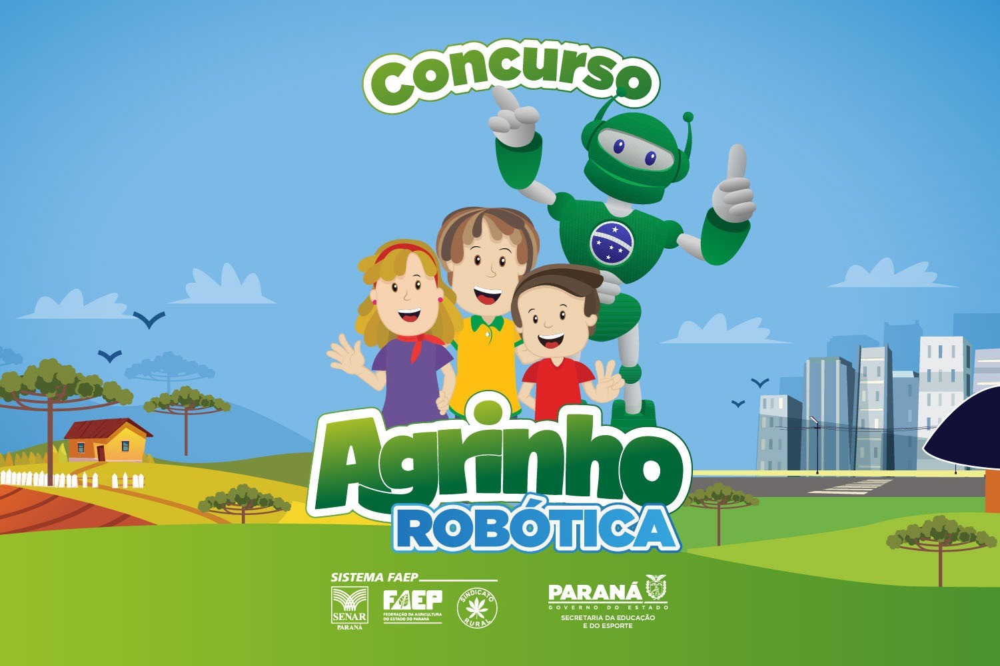
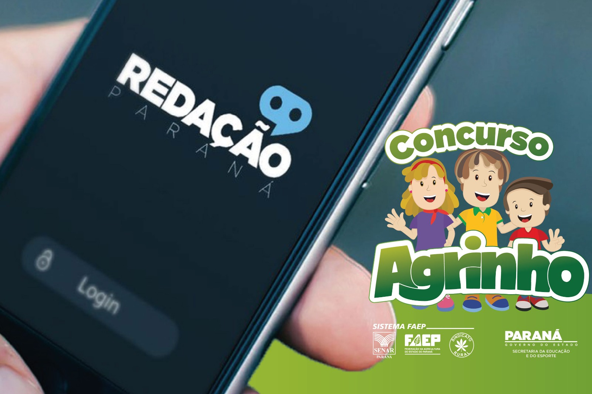
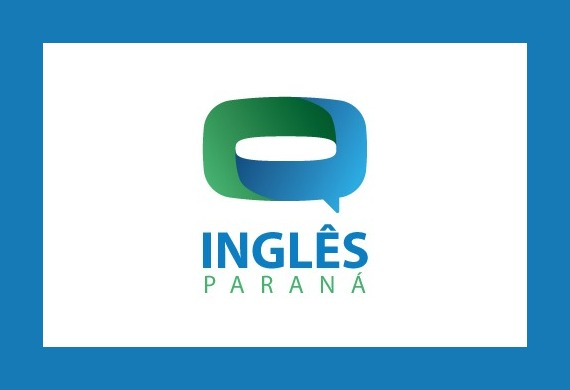

Sobre o programa
Agrinho é o maior programa de responsabilidade social do Sistema FAEP, resultado da parceria entre o SENAR-PR, FAEP, o governo do Estado do Paraná, mediante as Secretarias de Estado da Educação e do Esporte, da Agricultura e do Abastecimento, da Justiça, Família e Trabalho e do Desenvolvimento Sustentável e do Turismo, bem como com a colaboração das Prefeituras municipais e diversas empresas e instituições públicas e privadas.
O Programa completa 26 anos de trabalhos no Paraná. Concebido em 1995, foi à campo em 1996, levando às escolas da rede pública de ensino uma proposta pedagógica baseada em visão complexa, na inter e transdisciplinaridade e na pedagogia da pesquisa.
Agrinho +
O agrinho não está só na programação!! Veja em quais outras matérias ele está presente!!

